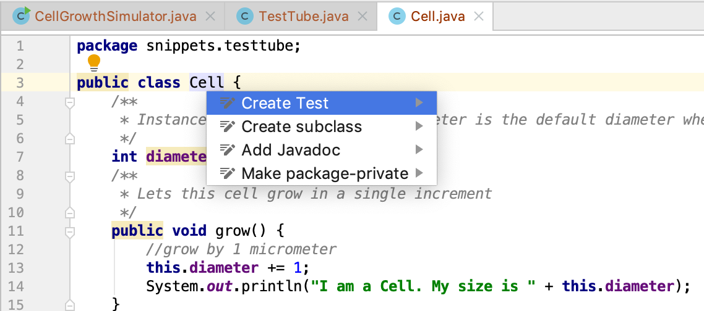
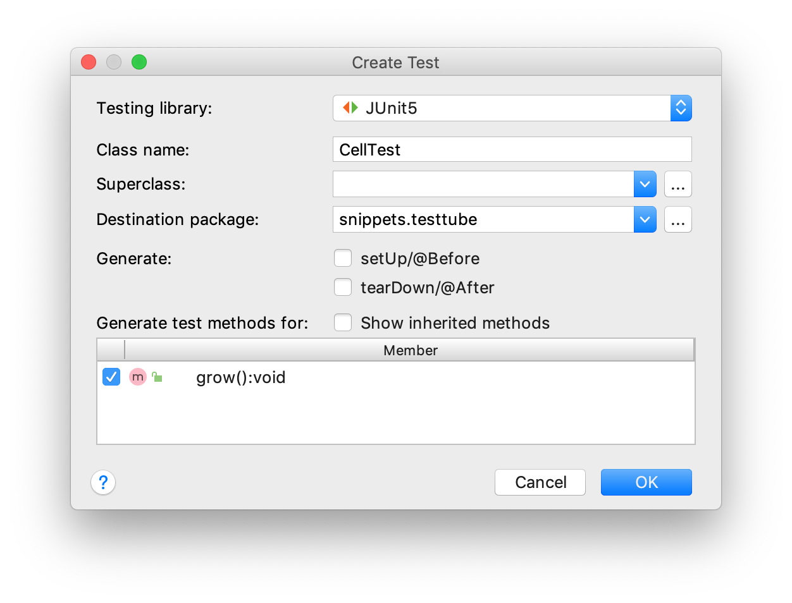

A first look at objects: growing cells
The entities
Suppose you want to build a cell growth simulation application. After careful analysis of the domain, I decided that this involves three entities I want to model: a simulator that controls the simulation process, a test tube that will hold the cells that are growing, and cells.
The relationships
The next step in a modeling process is to determine the relationships between the different entities. In this case, this is quite simple. The simulator will receive configuration arguments (e.g. how many cells to grow) from the command-line, start the simulation process and instantiate a test tube. The test tube will be responsible for instantiating the (initial) cell population. Finally, there will be cells growing "within" the test tube.
The code
Three separate source files are created (within a single package), each holding one class - a blueprint for the entities to be instantiated:
CellGrowthSimulator.javaTestTube.javaCell.java
Cell.java
We'll start with the simplest one: Cell. It has an instance variable called "size" which has a default
value of 5 when Cell objects are instantiated. Every call of the grow() method makes it increase its size by one.
package snippets.testtube;
class Cell {
/**
* Instance variable "size"; 5 micrometer is the default diameter when Cell objects are instantiated
*/
int diameter = 5;
/**
* Lets this cell grow in a single increment
*/
void grow() {
//grow by 1 micrometer
this.diameter += 1;
System.out.println("I am a Cell. My size is " + this.diameter);
}
}
To test the logic and correctness of this class, we will have to wait until other components are developed, such as TestTube and CellGrowthSimulator, unless you use (J)Unit testing.
The keyword this
To indicate you want to access properties or methods of the current active object, you use this together with the dot operator.
It is not required (the compiler will fill it in) to use this, but it makes for much more readable code if you consistently use it when referring to object members (methods and variables).
JUnit testing
JUnit is a unit test platform for Java. Its main purpose is to have a suite of test code guaranteeing the correctness of your production code. To create JUnit test code, you need to have the JUnit libraries defined as dependencies on your class path. See the post "A first IntelliJ project" for instructions how to that for JUnit5.
Next, you need to create a test class. Place the cursor on the class name and press alt+enter. Select "Create Test".

Select the method(s) you want to create test(s) for.

The test class opens in the editor and looks something like this:
package snippets.testtube;
import org.junit.jupiter.api.Test;
import static org.junit.jupiter.api.Assertions.*;
class CellTest {
@Test
void grow() {
}
}
Let's put some testing code in it to see whether our program logic works as intended:
@Test
void grow() {
Cell cell = new Cell();
//the initial diameter is supposed to be 5
assertTrue(cell.diameter == 5);
cell.grow();
//the diameter should have increased by one
assertTrue(cell.diameter == 6);
}
When you click on the little green triangle in the editor margin, the test will be executed and you get output like this:

The green checks indicate the test assertions passed. Knowing the Cell class is OK, let's proceed to class TestTube.
TestTube.java
TestTube is slightly more complex. It defines a constructor that makes it mandatory to
provide an initial number of cells. Also, you see the use of the new keyword for instantiating objects.
package snippets.testtube;
class TestTube {
Cell[] cells;
/**
* Constructs with an initial cell count.
* An exception is thrown when the initial cell count is below 1 or above 10e4.
*
* @param initialCellCount the initial cell count
* @throws IllegalArgumentException ex
*/
TestTube(int initialCellCount) {
if (initialCellCount == 0 || initialCellCount > 10e4) {
throw new IllegalArgumentException("initial cell count should be above 1 and below 10e4: " + initialCellCount);
}
//initialize the array with new Cells
cells = new Cell[initialCellCount];
for (int i = 0; i < initialCellCount; i++) {
cells[i] = new Cell();
}
}
/**
* Grows the cells, in one single iteration.
*/
void growCells() {
for (Cell cell : cells) {
cell.grow();
}
}
}
Note the for-loop in the constructor of this class:
for (int i = 0; i < initialCellCount; i++) {
cells[i] = new Cell();
}
The for-loop itself will be dealt with in the post "Flow control structures" This is the first place we see the new keyword. Whenever you see the new keyword, it means a new object is instantiated. See the section below for more detail on object construction.
Here is a simple JUnit test to verify the construction of the TestTube:
class TestTubeTest {
@Test
void growCells() {
TestTube testTube = new TestTube(10);
assertTrue(testTube.cells.length == 10);
}
}
CellGrowthSimulator.java
The last class of the system. Here is the first version:
package snippets.testtube;
/**
* "Controller" class
*/
class CellGrowthSimulator {
/**
* @param args cl-args should be length one, containing initial cell number.
*/
static void main(String[] args) {
if (args.length != 1) {
System.err.println("You must provide an initial cell count. Aborting.");
}
int initialCellNumber = Integer.parseInt(args[0]);
startSimulation(initialCellNumber);
}
static void startSimulation(int initialCellNumber) {
TestTube testTube = new TestTube(initialCellNumber);
//do one iteration of growing
testTube.growCells();
}
}
Note that directly processing command-line arguments is discouraged in general; you should implement
and support a standards-adhering command-line syntax (e.g. java -jar GrowthSimulator --initial_count 5).
So the final model now has this chain of relationships:
CellGrowthSimulator has a TestTube and TestTube has one or more Cells.
Object construction (first iteration)
You have seen the new keyword used several times now. But what does happen, exactly, when you type
Cell cell = new Cell();
The new keyword combined with the class name followed by parentheses, calls the constructor method of a class that instantiates and returns the reference to an object of that class. The parentheses () enclose the argument list for the constructor method, which is empty in this case.
The three steps of object construction are declaration, creation and assignment:
Cell celldeclares a variable of type Cell.new Cellinstantiates an object of type Cell, stores this in memory (called the heap in Java) and returns a reference to this stored object.=assigns the returned reference to the declared variable.
So…where is this constructor method in class Cell and what does it do? It is created automagically by the Java compiler, if you don't specify it yourself. More on constructors in a later post.
Inheritance
Inheritance is one of the key features of object-oriented programming.
Since subclasses inherit all properties and methods of their superclass, this is a very
powerful mechanism to introduce new or adjusted behavior in a software
system. The CancerCell class below extends Cell and thus declares itself
to be a subclass of Cell. It not only extends itself with new functionality (move()), but also modifies the behavior of the grow() method by changing the growthIncrement property of its supertype part.
class Cell {
int diameter = 5;
int growthIncrement = 1;
/**
* Lets this cell grow in a single increment
*/
void grow() {
//grow by 1 micrometer
this.diameter += growthIncrement;
System.out.println("I am a Cell. My size is " + this.diameter);
}
}
public class CancerCell extends Cell {
CancerCell() {
growthIncrement = 3;
}
void move() {
System.out.println("Moving through the body");
}
}
//usage
Cell cell = new Cell();
cell.grow();
cell.grow();
System.out.println("-----------");
CancerCell cCell = new CancerCell();
cCell.grow();
cCell.grow();
cCell.move();
output:
I am a Cell. My size is 6 I am a Cell. My size is 7 ----------- I am a Cell. My size is 8 I am a Cell. My size is 11 Moving through the body